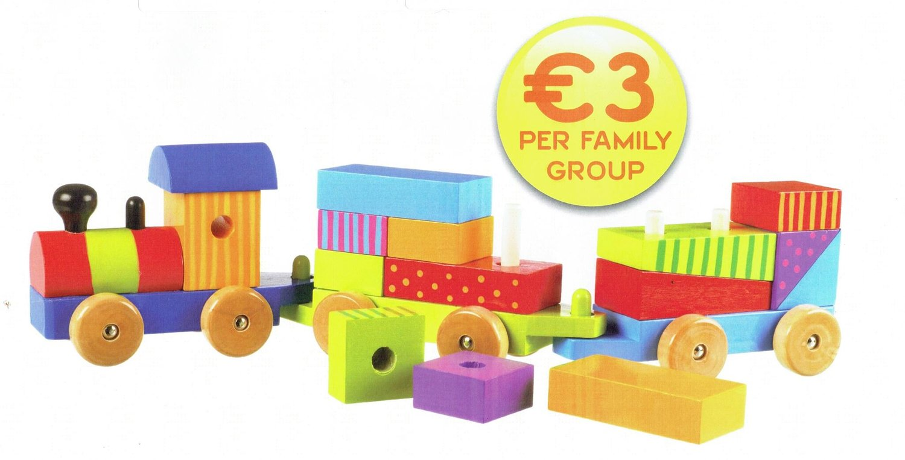

Collinstown Parent, Baby and Toddler Group
Parent-and-toddler
Collinstown Parent, Baby and Toddler Group Westmeath Collinstown Parent, Baby and Toddler Group is open to mammys, daddys, childminders and grandparents. Come have a chat with other grown ups and escape the house for the day. The kids will have a ball running around and playing with other children. Location: Collinstown community hall Day/Time: Every Tuesday at 10.00am -11.45pm (during school term time) 💶 Cost: €3 per family
Ages: 0-6 months, 6-12 months, 1 year old, 2 year old, 3 year old, 4 year old, 5 year old
Contact: 086 0520401
Address: Collinstown, County Westmeath, N91 NP02, Ireland
View on Google Maps →
Visit Website
View on Google Maps →